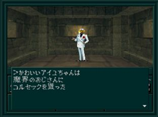
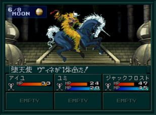

- 시설
- 마계 아저씨로부터의 선물
- 공략
- BOSS:타천사 비네
시설
- B1F : 회복
- 1F : 무기, 방어구, 도구, 사교의 관, CB(코드 브레이커), 운세(게임 진행에 대한 힌트를 준다)
마계 아저씨로부터의 선물

주인공이 여성이라면 월령이 1/8일 때 각F에서 마계 아저씨로부터 여성 전용 장비품을 받을 수 있다. (같은 아이템은 중복해서 받을 수 없다.)
| 장소 |
장비품 |
| 1F |
アイアンバニー(머리) |
| 2F |
ハイレグアーマー(가슴) |
| 3F |
アームブリッジ(손) |
| 4F |
ダンシングヒール(다리) |
| 5F |
コルセック(검) |
공략
5F에서
BOSS:타천사 비네와 전투
보스와 전투에서 승리하면 링을 얻는다. 링을 봉인의 문의 가운데 방에서 사용하면 북서쪽의 포식계의 문이 열린다.
BOSS:타천사 비네

| 이름 |
Lv15 堕天使ヴィネ |
| HP |
165 |
| 마법/특기 |
ジオンガ／マハジオンガ／ジバブー／ディア |
지온가를 사용한다. 마법 방어력(마력,지혜)이 낮으면 일격에 죽을 수도 있다.
총 공격이 통하니 총을 사용하면 좋다.